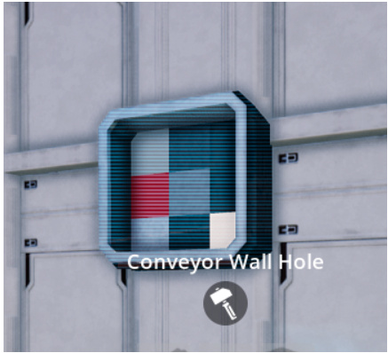

Hi Mikey, Its in the Tier 0 of the Hub, you have to scroll to the right, until you see the Magic Machine Milestone.
Mini Mods General (Suggestions and Comments)
Hi Fing3rz!!! Very good to know it… i will make some test on this settings!! Thanks!
Hi BoxJockey… I will try to make rotatable in the next version, but if i cant, i will lauch that C version!! Very good idea!! Thanks!
Hi Patrick, i have a plan to completely re-do this mod, and maybe add some new types of walls… I think now i can do it with the correct Collision… 
Hi Jaybz, thank you very much for this Test… Im reviewing it, and i seeing its working like the containers, with a principal input, and this is not supposed to happen. I will work on that to try to solve soon as i can!!!
This mod i have, but i cant get northing out there
1 Like
Try to go to the HUB, in milestones, and check all TIERS, scrolling to the right (sometimes is hidden)
i have Unlock this maod, it was 1 Milestone.

This hole i cant find. the others i have unlock
Its in Tier 1… you have to scroll to the right…and find this Conveyor Wall Hole…
I can’t build the hole where you can take items out, If you connect it to a box. Sry im German and its hard to say what i mean.


Hmm… I think you have to put a little belt to the items appear on this side of the wall.
In Streams i saw others they can get items out this or grab out!?^^
Sry my English
@Andre_Aquila
Thanks for the big update of your “Upside Down Foundations and more”. There are lot of additional elements. But on one of my favourites (Foundation 90 degrees) you changed the behaviour. Is it correct? In the old version it fits perfectly “under” a foundation and at the (outside) corner two of the 90 degrees foundations looks perfectly. Now they overlays half of the foundations. I hope you understand what I mean. If don’t I can install the old version.
1 Like
Thanks for all your great mods! I’ve got an issue with the multi balancer / splitters.
Is there a way to flip them so I can use them left to right AND right to left, but keeping the inputs and outputs in the same direction.
Hope you understand! Bit weird to explain 
Edit : I think Olivier_GIRARD was asking for the same thing on Apr 26
1 Like
I’m a big fan of your mods, you are the best modder ever !! Moreover when you put interface widget in spite of 200 recipes ! May I have an autopgraph ? 
1 Like
Hey Boyshall <3 <3 … You are a Modder, not me… I just give some ideas through the game, hoping you make it a real mod…
I hope one day be good as you, understand all this widgets and scripts you make!!!
Thanks for all Help Boyshall!!! A good friend.
Can you make the wall hole work with lifts please?
1 Like
OOHh, i test it and see it now… Sorry Lonesome Cowboy… some people asked me to put it centered, and i just centered and didnt see that its kinda wierd. I will put them back in the next version. I hope to work on it soon… Thanks for the heads up!
Hi Generic Games!!! I think it was working with the lifts… I will study to see whats happened… Thanks!